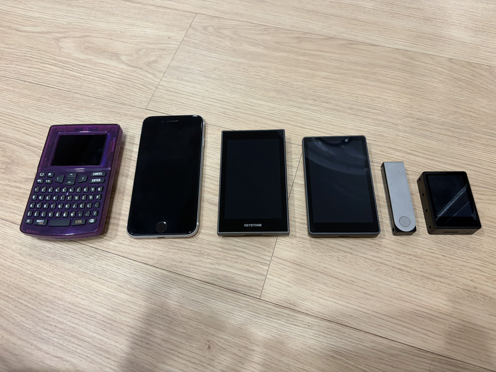

이 홈페이지에 예전부터 와주셨던 분이라면, 내가 코인카이트(Coinkite)사의 콜드카드 Q에 얼마나 애착을 가지고 썼는지 알 거다.
거의 애착인형 급이었지. 여기저기 추천도 하고 다녔다니까.

그러다 엔트로피 부족 사건이 터지면서, 내가 고생해서 만든 작업물들도 같이 무너지기 시작했다.
메뉴 하나하나 들어가보고, 사진 찍고, 내용 수정해가며 콜드카드를 알리려 했던 내 노력과 시간이 그대로 날아가버렸다.
1. 내가 좋아했던 것들
나는 콜드카드 Q의 '보안노트' 기능을 즐겨 썼다. 인터넷이 연결되지 않는 환경에서 문서를 저장할 수 있다는 게, 꽤 매력적이지 않은가.
시드를 여러 개 저장할 수 있는 부분, 멀티시그 수령 주소가 정말 내 소유의 주소인지 QR 한 번으로 확인할 수 있는 기능도 좋았고, 탭사이너·세츠카드와의 연계도 마음에 들었다.
2. 근데 가장 중요한 데서 구멍이 뚫려 있었다
문제는, 이런 유용한 기능이 아무리 많으면 뭐 하나. 가장 핵심적인 부분에서 구멍이 뚫려 있었다는 걸 안 순간, 신뢰는 나락으로 떨어졌다.
바로 시드 생성 부분이었다. 원래 128비트여야 할 엔트로피가, 일부 기기·펌웨어 버전에서는 하드웨어 난수 생성기 대신 예측 가능한 소프트웨어 대체 로직으로 슬쩍 넘어가면서 한참 모자란 수준으로 떨어져 있었다고 한다. 시드 생성에 문제가 있으면, 그 위에 쌓인 다른 기능들이 아무리 잘 만들어졌어도 다 같이 흔들린다.
암호학에서 가장 무서운 말은 "대부분은 안전하다"이다.
3. 오픈소스라서 오히려 더 씁쓸했다
오픈소스니까, 그들의 설명을 들어보면 시드 생성 이외엔 괜찮을 거라는 생각도 든다. 하지만 마음이 내키질 않는다. 한 번 잃은 신뢰를 되찾기는 정말 쉽지 않다니까.
이제는 떠나보내야 할 시간인 것 같다.